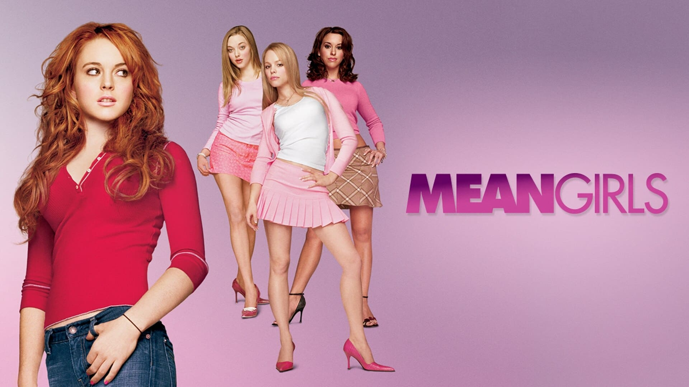

Sobre o filme:

- Data de lançamento: 30/04/2004
- Duraçâo: 1h 37m
- Direção: Mark Waters
- Roteiro: Tina Fey
- Produção: Lorne Michaels, Tony Shimkin e Louise Rosner
- Gêneros: Comédia e Drama
- Orçamento: US$17mi
Frases que marcaram o filme:
- "Às quartas, nós usamos rosa!" - Karen
- "Eu estava obcecada. Passava 80% do meu tempo falando sobre Regina George e nos 20% restante eu torcia para que alguém falasse dela, só para poder falar mais um pouco." - Cady
- "No dia 3 de outubro, ele me perguntou que dia era." - Cady
- "Isso é tão barro!" - Gretchen
- "Vamos logo, otária. Nós vamos fazer compras!" - Regina
- "Eu lamento que as pessoas tenham inveja de mim, mas não posso evitar ser tão popular." - Gretchen
- "Meus peitos sempre sabem quando vai chover" - Karen
Mais informações...